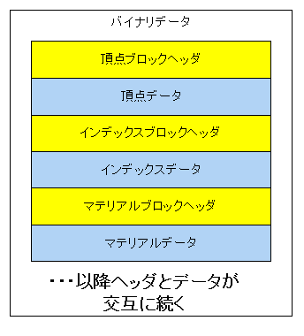

図0504a
ブロックデータをコード化したものは以下のようになります。
//--------------------------------------------------------------------------------------
/// ブロックタイプ定義（モデルメッシュ読み込み用）
//--------------------------------------------------------------------------------------
enum class BlockType {
Vertex, ///< 頂点
Index, ///< インデックス
Material, ///< マテリアル
MaterialCount, ///< マテリアル数
SkinedVertex, ///< スキン頂点
BoneCount, ///< ボーン数
AnimeMatrix, ///< アニメーション行列
VertexWithTangent, ///< タンジェント付き頂点
SkinedVertexWithTangent, ///< スキンタンジェント付き頂点
End = 100 ///< 終了
};
//--------------------------------------------------------------------------------------
/// ブロックヘッダ構造体
//--------------------------------------------------------------------------------------
struct BlockHeader {
BlockType m_Type; ///< ブロックタイプ
UINT m_Size; ///< バイト数
};
void FbxMeshObject::SaveStaticBinFile(const wstring& Dir, const wstring& FileName,
size_t MeshIndex, float Scale) {
try {
string header("BDV1.0");
if (header.size() < 16) {
header.resize(16, '\0');
}
vector<VertexPositionNormalTexture> vertices;
vector<VertexPositionNormalTangentTexture> vertices_withtan;
vector<uint16_t> indices;
vector<MaterialEx> materials;
vector< shared_ptr<TextureResource> > textures;
auto PtrDraw = GetComponent<BcPNTStaticModelDraw>(false);
auto PtrTanDraw = GetComponent<BcPNTnTStaticModelDraw>(false);
shared_ptr<FbxMeshResource2> Mesh;
if (m_WithTangent) {
Mesh = dynamic_pointer_cast<FbxMeshResource2>(PtrTanDraw->GetMeshResource());
Mesh->GetStaticVerticesIndicesMaterialsWithTangent(vertices_withtan,
indices, materials);
for (auto& v : vertices_withtan) {
v.position *= Scale;
}
}
else {
Mesh = dynamic_pointer_cast<FbxMeshResource2>(PtrDraw->GetMeshResource());
Mesh->GetStaticVerticesIndicesMaterials(vertices, indices, materials);
for (auto& v : vertices) {
v.position *= Scale;
}
}
wstring filename = Dir + FileName;
ofstream ofs(filename, ios::out | ios::binary);
ofs.write(header.c_str(), 16);
//頂点の保存
BlockHeader VerTexHeader;
if (m_WithTangent) {
VerTexHeader.m_Type = BlockType::VertexWithTangent;
VerTexHeader.m_Size =
(UINT)vertices_withtan.size() * sizeof(VertexPositionNormalTangentTexture);
ofs.write((const char*)&VerTexHeader, sizeof(BlockHeader));
ofs.write((const char*)&vertices_withtan.front(), VerTexHeader.m_Size);
}
else {
VerTexHeader.m_Type = BlockType::Vertex;
VerTexHeader.m_Size = (UINT)vertices.size() * sizeof(VertexPositionNormalTexture);
ofs.write((const char*)&VerTexHeader, sizeof(BlockHeader));
ofs.write((const char*)&vertices.front(), VerTexHeader.m_Size);
}
//インデックスの保存
BlockHeader IndexHeader;
IndexHeader.m_Type = BlockType::Index;
IndexHeader.m_Size = (UINT)indices.size() * sizeof(uint16_t);
ofs.write((const char*)&IndexHeader, sizeof(BlockHeader));
ofs.write((const char*)&indices.front(), IndexHeader.m_Size);
//マテリアルの保存
//マテリアル数のヘッダの保存
BlockHeader MaterialCountHeader;
MaterialCountHeader.m_Type = BlockType::MaterialCount;
MaterialCountHeader.m_Size = (UINT)materials.size();
ofs.write((const char*)&MaterialCountHeader, sizeof(BlockHeader));
//マテリアル本体の保存
wchar_t Drivebuff[_MAX_DRIVE];
wchar_t Dirbuff[_MAX_DIR];
wchar_t FileNamebuff[_MAX_FNAME];
wchar_t Extbuff[_MAX_EXT];
BlockHeader MaterialHeader;
MaterialHeader.m_Type = BlockType::Material;
for (auto mat : materials) {
wstring TextureFileName = mat.m_TextureResource->GetTextureFileName();
::ZeroMemory(Drivebuff, sizeof(Drivebuff));
::ZeroMemory(Dirbuff, sizeof(Dirbuff));
::ZeroMemory(FileNamebuff, sizeof(FileNamebuff));
::ZeroMemory(Extbuff, sizeof(Extbuff));
//モジュール名から、各ブロックに分ける
_wsplitpath_s(TextureFileName.c_str(),
Drivebuff, _MAX_DRIVE,
Dirbuff, _MAX_DIR,
FileNamebuff, _MAX_FNAME,
Extbuff, _MAX_EXT);
TextureFileName = FileNamebuff;
TextureFileName += Extbuff;
SaveMaterialEx SaveMat;
SaveMat.m_StartIndex = mat.m_StartIndex;
SaveMat.m_IndexCount = mat.m_IndexCount;
SaveMat.m_Diffuse = mat.m_Diffuse;
SaveMat.m_Specular = mat.m_Specular;
SaveMat.m_Ambient = mat.m_Ambient;
SaveMat.m_Emissive = mat.m_Emissive;
UINT TextureStrSize = (TextureFileName.size() + 1) * sizeof(wchar_t);
MaterialHeader.m_Size = sizeof(SaveMaterialEx) + TextureStrSize;
ofs.write((const char*)&MaterialHeader, sizeof(BlockHeader));
ofs.write((const char*)&SaveMat, sizeof(SaveMaterialEx));
ofs.write((const char*)TextureFileName.c_str(), TextureStrSize);
}
//End(ヘッダのみ)
BlockHeader EndHeader;
EndHeader.m_Type = BlockType::End;
EndHeader.m_Size = 0;
ofs.write((const char*)&EndHeader, sizeof(BlockHeader));
ofs.close();
}
catch (...) {
throw;
}
}
ofs.write(header.c_str(), 16);
string header("BDV1.0");
if (header.size() < 16) {
header.resize(16, '\0');
}
//頂点の保存
BlockHeader VerTexHeader;
if (m_WithTangent) {
VerTexHeader.m_Type = BlockType::VertexWithTangent;
VerTexHeader.m_Size =
(UINT)vertices_withtan.size() * sizeof(VertexPositionNormalTangentTexture);
ofs.write((const char*)&VerTexHeader, sizeof(BlockHeader));
ofs.write((const char*)&vertices_withtan.front(), VerTexHeader.m_Size);
}
else {
VerTexHeader.m_Type = BlockType::Vertex;
VerTexHeader.m_Size = (UINT)vertices.size() * sizeof(VertexPositionNormalTexture);
ofs.write((const char*)&VerTexHeader, sizeof(BlockHeader));
ofs.write((const char*)&vertices.front(), VerTexHeader.m_Size);
}
//インデックスの保存
BlockHeader IndexHeader;
IndexHeader.m_Type = BlockType::Index;
IndexHeader.m_Size = (UINT)indices.size() * sizeof(uint16_t);
ofs.write((const char*)&IndexHeader, sizeof(BlockHeader));
ofs.write((const char*)&indices.front(), IndexHeader.m_Size);
//End(ヘッダのみ)
BlockHeader EndHeader;
EndHeader.m_Type = BlockType::End;
EndHeader.m_Size = 0;
ofs.write((const char*)&EndHeader, sizeof(BlockHeader));
ofs.close();
void MeshResource::ReadBaseData(const wstring& BinDataDir, const wstring& BinDataFile,
vector<VertexPositionNormalTexture>& vertices,
vector<VertexPositionNormalTangentTexture>& vertices_withtan,
vector<uint16_t>& indices, vector<MaterialEx>& materials) {
vertices.clear();
vertices_withtan.clear();
indices.clear();
materials.clear();
wstring DataFile = BinDataDir + BinDataFile;
BinaryReader Reader(DataFile);
//ヘッダの読み込み
auto pHeader = Reader.ReadArray<char>(16);
string str = pHeader;
if (str != "BDV1.0") {
throw BaseException(
L"データ形式が違います",
DataFile,
L"MeshResource::ReadBaseData()"
);
}
//頂点の読み込み
auto blockHeader = Reader.Read<BlockHeader>();
if (!(blockHeader.m_Type == BlockType::Vertex
|| blockHeader.m_Type == BlockType::VertexWithTangent)) {
throw BaseException(
L"頂点のヘッダが違います",
DataFile,
L"MeshResource::ReadBaseData()"
);
}
if (blockHeader.m_Type == BlockType::Vertex) {
auto VerTexSize
= blockHeader.m_Size / sizeof(VertexPositionNormalTexturePOD);
auto pVertex
= Reader.ReadArray<VertexPositionNormalTexturePOD>((size_t)VerTexSize);
for (UINT i = 0; i < VerTexSize; i++) {
VertexPositionNormalTexture v;
v.position.x = pVertex[i].position[0];
v.position.y = pVertex[i].position[1];
v.position.z = pVertex[i].position[2];
v.normal.x = pVertex[i].normal[0];
v.normal.y = pVertex[i].normal[1];
v.normal.z = pVertex[i].normal[2];
v.textureCoordinate.x = pVertex[i].textureCoordinate[0];
v.textureCoordinate.y = pVertex[i].textureCoordinate[1];
vertices.push_back(v);
}
}
else if (blockHeader.m_Type == BlockType::VertexWithTangent) {
auto VerTexSize = blockHeader.m_Size / sizeof(VertexPositionNormalTangentTexturePOD);
auto pVertex
= Reader.ReadArray<VertexPositionNormalTangentTexturePOD>((size_t)VerTexSize);
for (UINT i = 0; i < VerTexSize; i++) {
VertexPositionNormalTangentTexture v;
v.position.x = pVertex[i].position[0];
v.position.y = pVertex[i].position[1];
v.position.z = pVertex[i].position[2];
v.normal.x = pVertex[i].normal[0];
v.normal.y = pVertex[i].normal[1];
v.normal.z = pVertex[i].normal[2];
v.tangent.x = pVertex[i].tangent[0];
v.tangent.y = pVertex[i].tangent[1];
v.tangent.z = pVertex[i].tangent[2];
v.tangent.w = pVertex[i].tangent[3];
v.textureCoordinate.x = pVertex[i].textureCoordinate[0];
v.textureCoordinate.y = pVertex[i].textureCoordinate[1];
vertices_withtan.push_back(v);
}
}
else {
throw BaseException(
L"頂点の型が違います",
DataFile,
L"MeshResource::ReadBaseData()"
);
}
//インデックスの読み込み
blockHeader = Reader.Read<BlockHeader>();
if (blockHeader.m_Type != BlockType::Index) {
throw BaseException(
L"インデックスのヘッダが違います",
DataFile,
L"MeshResource::ReadBaseData()"
);
}
auto IndexSize = blockHeader.m_Size / sizeof(uint16_t);
auto pIndex = Reader.ReadArray<uint16_t>((size_t)IndexSize);
for (UINT i = 0; i < IndexSize; i++) {
indices.push_back(pIndex[i]);
}
//マテリアルの読み込み
//マテリアル数の読み込み
blockHeader = Reader.Read<BlockHeader>();
if (blockHeader.m_Type != BlockType::MaterialCount) {
throw BaseException(
L"マテリアル数のヘッダが違います",
DataFile,
L"MeshResource::ReadBaseData()"
);
}
UINT MaterialCount = blockHeader.m_Size;
for (UINT i = 0; i < MaterialCount; i++) {
//テクスチャファイル名が可変長なので注意。
blockHeader = Reader.Read<BlockHeader>();
if (blockHeader.m_Type != BlockType::Material) {
throw BaseException(
L"マテリアルのヘッダが違います",
DataFile,
L"MeshResource::ReadBaseData()"
);
}
UINT TextureFileNameSize = blockHeader.m_Size - sizeof(MaterialExPOD);
auto rMaterial = Reader.Read<MaterialExPOD>();
MaterialEx ToM;
//!開始インデックス
ToM.m_StartIndex = rMaterial.m_StartIndex;
//!描画インデックスカウント
ToM.m_IndexCount = rMaterial.m_IndexCount;
//! デフィーズ（物体の色）
ToM.m_Diffuse.x = rMaterial.m_Diffuse[0];
ToM.m_Diffuse.y = rMaterial.m_Diffuse[1];
ToM.m_Diffuse.z = rMaterial.m_Diffuse[2];
ToM.m_Diffuse.w = rMaterial.m_Diffuse[3];
//! スペキュラー（反射光）
ToM.m_Specular.x = rMaterial.m_Specular[0];
ToM.m_Specular.y = rMaterial.m_Specular[1];
ToM.m_Specular.z = rMaterial.m_Specular[2];
ToM.m_Specular.w = rMaterial.m_Specular[3];
//! アンビエント（環境色）
ToM.m_Ambient.x = rMaterial.m_Ambient[0];
ToM.m_Ambient.y = rMaterial.m_Ambient[1];
ToM.m_Ambient.z = rMaterial.m_Ambient[2];
ToM.m_Ambient.w = rMaterial.m_Ambient[3];
//! エミッシブ（放射光）
ToM.m_Emissive.x = rMaterial.m_Emissive[0];
ToM.m_Emissive.y = rMaterial.m_Emissive[1];
ToM.m_Emissive.z = rMaterial.m_Emissive[2];
ToM.m_Emissive.w = rMaterial.m_Emissive[3];
auto pTexture = Reader.ReadArray<wchar_t>(TextureFileNameSize / sizeof(wchar_t));
wstring TextureFileStr = pTexture;
TextureFileStr = BinDataDir + TextureFileStr;
ToM.m_TextureResource = ObjectFactory::Create<TextureResource>(TextureFileStr);
materials.push_back(ToM);
}
//Endの読み込み
blockHeader = Reader.Read<BlockHeader>();
if (blockHeader.m_Type != BlockType::End) {
throw BaseException(
L"Endヘッダが違います",
DataFile,
L"MeshResource::ReadBaseData()"
);
}
}
//--------------------------------------------------------------------------------------
/// VertexPositionNormalTexture読み込み用構造体
//--------------------------------------------------------------------------------------
struct VertexPositionNormalTexturePOD {
float position[3]; ///< 位置情報
float normal[3]; ///< 法線
float textureCoordinate[2]; ///< テクスチャUV
};